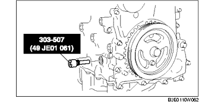

KURBELWINKELGEBER (CKP) AUSBAUEN/EINBAUEN [LF]
B3E014018230W02
Lösen
1. Die Batterieabdeckung ausbauen.
2. Das Massekabel der Batterie abklemmen.
3. Die Abdeckplatte entfernen.
4. Für einfacheren Zugang folgende Verfahren anwenden.
-
(1) Das Vorderrad (rechts) abmontieren.
-
(2) Den Spritzschutz entfernen.
5. Den Steckverbinder des Kurbelwinkelgebers abziehen.
6. Die Befestigungsschraube lösen und den Kurbelwinkelgeber ausbauen.
Anschließen
-
Achtung
-
• Beim Austauschen des Kurbelwinkelgebers darauf achten, dass kein Fremdmaterial wie Metallspäne eindringt. Wenn beim Einbau Fremdmaterial mit hineingelangt, ist das Ausgangssignal des Sensors fehlerhaft, wodurch eine Schankung im magnetischen Fluss auftritt und eine Verschlechterung der Motorregelung verursacht.
-
• Den Kurbelwinkelgeber nur entsprechend der nachfolgenden Methode einbauen, oder die Einbauposition nicht ändern. Dies kann eine Alterung der Motorsteuerung bezüglich des Zündzeitpunktes und der Kraftstoffeinspritzung hervorrufen.
1. Die folgenden Handlungen durchführen damit Zylinder Nr. 1 im OT des Verdichtungstaktes steht.
-
(1) Den unteren Blindstopfen des Zylinderblocks herausdrehen und das SST anbringen.

-
(2) Die Kurbelwellen-Riemenscheibe im Uhrzeigersinn drehen, bis das Kurbelgewicht das SST berührt, damit Zylinder Nr. 1 im OT des Verdichtungstaktes steht.
2. Mit einem Lineal eine gerade Linie direkt zur Mitte des Impulsradzahns (neunter Impulsradzahn vom Freiraum aus gegen den Uhrzeigersinn gezählt) an der Kurbelwellen-Riemenscheibe ziehen.
-
Achtung
-
• Eine inkorrekt angebrachte Mittellinie sorgt dafür, dass die Montage nicht korrekt ist, wodurch die Motorsteuerung für den Zündzeitpunk und Kraftstoffeinspritzung altert. Die Mittellinie sorgfältig anbringen.
3. Die Mittellinie des Kurbelwinkelgebers und die in Schritt 2 gezogene Linie fluchten und den Kurbelwinkelgeber montieren.
4. Die Befestigungsschrauben des Kurbelwinkelgebers festziehen.
-
Anzugsmoment
-
5,5-7,5 Nm {56-76 cmkg, 49-66 in·lbf}
5. Das SST entfernen und den Blindstopfen anbringen.
-
Anzugsmoment
-
18-22 Nm {1,9-2,2 mkg, 14-16 ft·lbf}